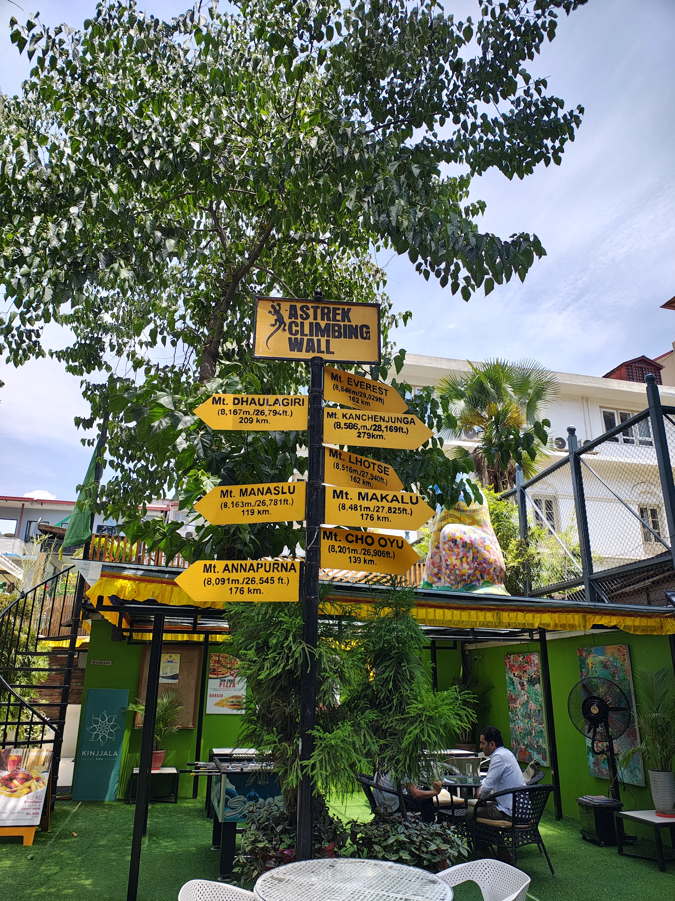
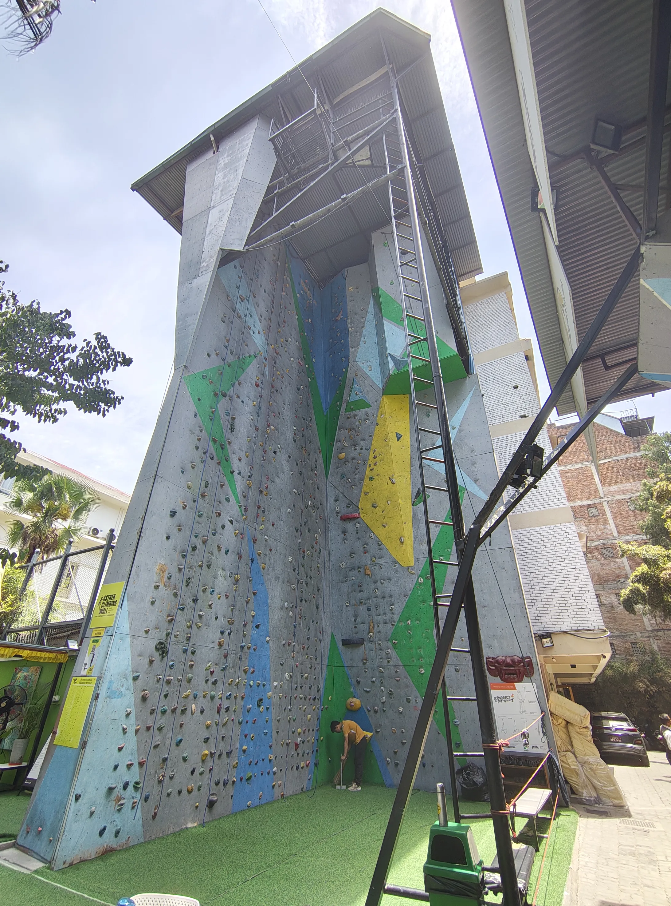
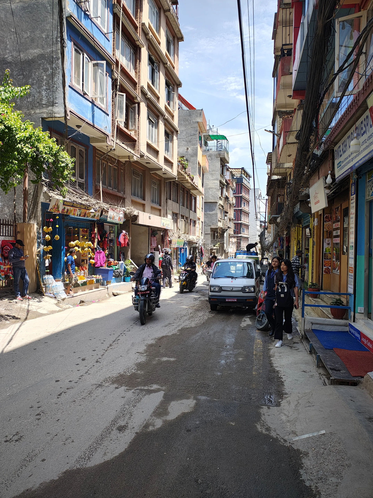
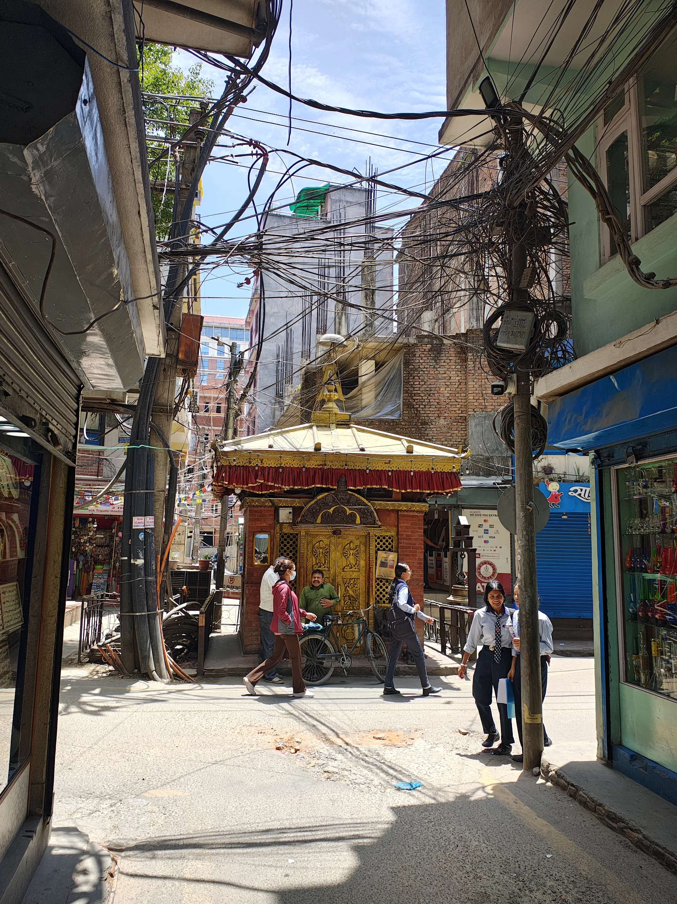
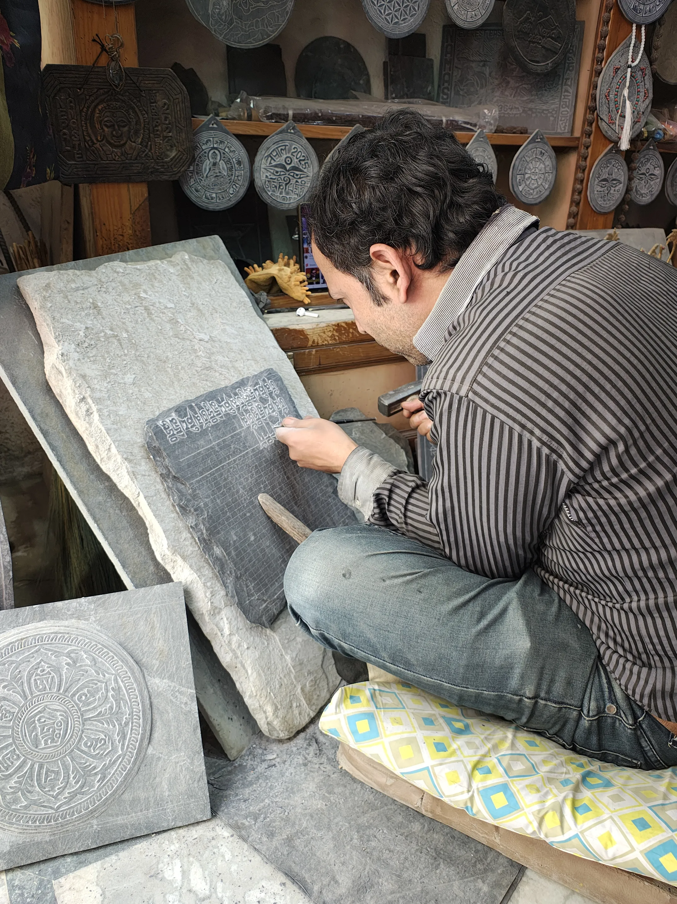
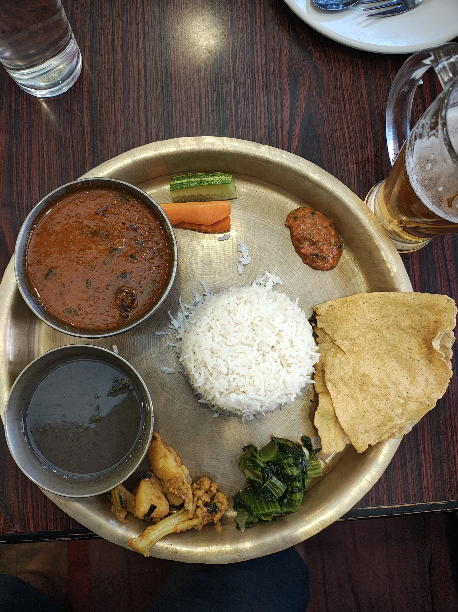
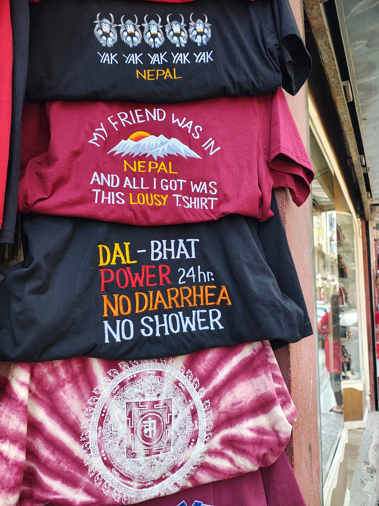

Day 0 / 15: Permits and Thamel¶
We Spend the day in Thamel getting permits and roaming the streets
Date: 9 May 2025
Breakfast and Permits¶
I was woken up rather rudely by Shyam and Niranjan for breakfast. I dragged my body, brushed my teeth, and threw myself downstairs, where the rest of the group was hanging out. More specifically, they were having breakfast.
The breakfast was a set breakfast of toast, eggs, and coffee. That was actually very nice; however, the coffee was weak. I would not feed this coffee to my enemies. Fortunately, they obliged when I asked them to add more instant coffee to the existing cup. That made it palatable. Since then, I have started carrying instant coffee powder myself on all of my trips. (Slowly, I am becoming my grandfather.)
After breakfast, we were scheduled to meet with our guide. Up until this point, the only communication we had was via WhatsApp. As I was the main point of contact, I was anxious. However, Sid called soon enough, and when I stepped out of the hotel to find him, he spotted me in less than a minute. I think something about my hairstyle gave me away; can anyone guess?
We met Sid, and he then introduced us to our guide, Jangbu. He is the sweetest man I've ever met. He is funny and quirky, has limited vision, and is also a very capable guide.
Sid started showing us the permits that he had collected for us: the Manaslu Conservation Area Permit (M-CAP) and the Annapurna Conservation Area Permit (A-CAP). The only permit remaining was the Manaslu Restricted Area Permit (MRAP), for which we needed to go to the immigration office with our passports. Hassan volunteered to do this for the entire group, so we handed our passports over to him. We also decided to clear all the bills (guide and permit costs) before the trek.
Since we needed cash for this, all of us went to exchange our money with a money changer whom Hassan had found. (He really likes Nepal and has been to the country multiple times.) We were carrying enough cash in INR to fund most of the trip. Fortunately, the money changer was extremely nice, and he gave us a good rate. With the money exchanged, we headed back to the hotel, where Sid was waiting, and paid him all the dues. Then we went our separate ways. Sid and Hassan would be back in a while with the bus tickets for the next day.
Astrek Climbing Wall¶
Niranjan, Tejas, and I decided to walk to the Astrek climbing wall and explore the place. The Astrek climbing wall is a combination of a climbing wall, a bouldering gym, a cafe, and two different stores. They all share the same space, so everything is very close together. I looked at a bunch of climbing gear that I wanted to get. The prices are very competitive, especially compared to what we get in India.
There was a signpost in the compound which pointed to most of the notable mountains in Nepal. This was really surreal for me. Up until now, I didn't realize that I was actually in Nepal, and specifically in Thamel. This was the fabled place from which most adventures started (at least in documentaries and movies).

The artificial climbing wall at Astrek was also huge. It was very interesting to see so many climbers nearby. I managed to sneak a photo during the afternoon, when it was slightly empty.

Narrow Streets of Thamel¶
I spent some more time walking through the narrow streets of Thamel. I find narrow streets to be very intimate. The streets are extremely narrow; if you are standing on one side of the street, sometimes you just forget that the street is even there. Everything just blends into each other.

This is one of the widest streets. Some of the other streets are significantly narrower.
The streets of Thamel are beautiful. There are a lot of historical, religious, and spiritual artifacts in these streets. Here is a shrine in the middle of the street. Over the next couple of days, I would come across this shrine repeatedly, as it was on our regular walking and hanging-out route. There was a momo shop selling incredible food just next to it.

While walking through one of these streets, I came across a souvenir shop selling knick-knacks. What struck me was the shopkeeper, who was busy carving a stone. This is a Tibetan art form that is considered sacred. Read about it here.

I stood there for some time, watching him use the chisel and hammer with the skill of a person who had made thousands of these. It was beautiful. He looked at me, and I said hello. Once he was satisfied that I was not looking to buy anything and was just looking around, he went back to his carving.
I really love how he has marked the stone with a grid to help him carve. This reminds of the grid-notebooks we used to use as children especially for mathematics.
Lunch¶
Soon it was time to meet Sid and Hassan, so we headed back. This meeting was short; we discussed the ticket and tomorrow's plan. After that, Shyam and Sonam went away to complete some office work, and the rest of us decided to have lunch together.
We decided to head to a Thakali place for lunch. A Thakali set is a complete meal that comes with rice, dal, and tarkari (vegetables). Dal-bhat is the national dish of Nepal. We ordered a buff Thakali set. The name Thakali refers a group of people that are native to the Mustang region on Nepal.

The buff curry was slightly spicier than I prefer; however, the dal (the black dal) was divine. I love a good dal-bhat combination. I was getting more excited in anticipation of the next few weeks, as we would be eating primarily dal-bhat on most days.
Beer is readily available in Nepal, and I was not complaining. I do not think I have ever drunk so much beer in a day.
Beer with lunch was a great idea.
Evening¶
After lunch, Hassan and Tejas took off for some work, so now it was just Niranjan and me. We started walking and exploring the city. We went to a Himalayan Java coffee shop and had a V60 pour-over, which was recommended by the barista there. Just adjacent to this store were a couple of stores selling expensive branded gear, and we decided to have a look. Well, I decided, and Niranjan had to tag along. This continued for an hour or so, after which we retired to the room. We bought matching T-shirts on our way back.
I spotted a shop selling T-shirts with a quote that is very close to my heart. Our guide, Mr. Jangbu, told us that the common Nepali saying of dal-bhat power; 24-hour can be extended. He said the full saying goes like this:
Dal-Bhat power, 24 hour
Do Diarreha, No shower.
I think this is the best thing on the planet.

I had a pending shower to take, as I had not showered in two days. Also, I would not shower for the next 20 days minimum, so this shower was essential. I was very excited about the not-showering part.
After showering, Niranjan and I headed out again, this time to a rock bar called Purple Haze. When we reached there, it was almost empty, as it was still early in the evening; however, things soon picked up. There was live music, and a band called "The Apostles" was playing some really good music. It was fun. This was the first time I was attending a live band performance. It was too noisy, so I stuffed some tissue paper into my ears, which made things bearable.
The kitchen was serving pizza slices, which we promptly ordered along with a couple of beers. It was very good overall.
While returning, I picked up Pepsi (my personal anti-puke juice for long bus rides) and some Mentos. Tomorrow we had a 12-hour bus ride. I could not be more excited. (As we will see, the author could be more excited.)
Toodles. This is 23:30 and I'm officially signing off for the night.
Next: Kathmandu to Machakhola